摆钟模拟
Script by adqeor@XJTU 理论力学课程的第二次大作业, 探究物理摆的周期诸元的关系. 影响因素包括温度(摆长), 重力扰动, 阻尼.
Contents
模型介绍
单摆是具有 1 自由度的系统, 摆角 theta 为状态参数. 重力加速度 g 在纸面内向下指; 以摆自然悬垂位置为 0 度, 纸面内做正螺旋的角速度垂直向外; 扰动主矢 x 分量水平向右, y 分量垂直向上, 扰动主矩使摆角速度增大.
摆的质量为 m, 质心到转轴的距离为 L, 质心对转轴具有转动惯量 J. 阻尼系数为 rho, 阻尼力 f_Damp = - rho * theta' 作用于质心.
[phyPend]质量集中分布的物理单摆, 满足微分方程: theta'' + g/L * sin(theta) = 0
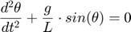
[phyMiniPend]质量集中分布的微小摆幅物理单摆, 满足微分方程: theta'' + g/L * theta = 0
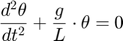
[rigidPend]刚体单摆, 满足微分方程: theta'' + mgL/J * sin(theta) 0
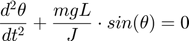
[rigidDampPend]空气阻尼刚体单摆, 在上述微分方程左侧增加阻尼项 rho/J * theta': theta'' + mgL/J * sin(theta) + rho/J * theta' = 0
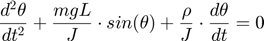
[rigidDampTurbPend]受随扰动的空气阻尼刚体单摆, 在上述微分方程左侧继续增加随机扰动项 - L/J*(Fx * cos(theta)+Fy*sin(theta)) - M/J
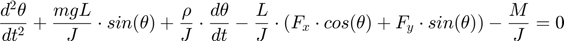
其中 F_x, F_y 为扰动的主矢, M 为扰动的主矩. 扰动的幅值谱密度给定.
History:
[rev0.1.0] 6 Feb. 2021: 重建项目. 实现 phyPend, phyMiniPend, rigidPend, rigidDampPend; rigidDampTurbPend 模型暂时没有动态扰动; 建立文档; 发布; 28 Oct. 2020: Create file.
定义方程
MATLAB ode 求解器接收的方程 f 满足 y' = f(t, y) 但摆的微分方程形如 y'' = f(t, y, y'), 为二阶微分方程.
使用换元技巧: 记 x1 = y, x2 = y'; X = [x1; x2] = [y; y'], 有 [X]' = [y; y']' = [y'; y''] = [y'; f(t, x1, x2)] = [x2; f(t, x1, x2)] 而式子 [X]' = [x2; f(t, x1, x2)] 可以表示为 X' = F(T, X), 实现了降解
使用形如 f_modelName 的(匿名)函数句柄表示各个模型中除theta'' 的项, 即 theta'' = f_modelName(t, theta, theta'). 这样可以随时访问 g 等参数的实时值, 而无需对参量 global 声明, 或是定义本地函数完成参数传递. 这是因为参数以引用 形式代入函数句柄. 注意函数参数中 y 的微分阶次顺次升高, 因而送入 ode 求解器的函数形如 modelName = @(t, X) [X(2); f_modelName(t, X(1), X(2))];
由于摆可能围绕支点发生翻滚, 解出的 y 不能直接用于作图 提问: 能否在方程中对 y 进行判定, 发现超出 +-pi 范围, 则进行相应的加减呢? 回答: 不行. trim 过程会造成该点的微分(数值差分)很大, 导致错误的解. 解决方案: - 对 L * sin(y) 作图, 利用正余弦的有界性(下称'三角限幅法'); - 或对 y' 作图, 只要系统机械能不发散(下称'角速度限幅法').
clc; close all; % 物理模型参数 g = 9.8; L = 1; m = 5; J = m * L * L; rho = 5; Fx = m*g; Fy = m*g; M = 0; % 仿真时间尺度参数 tInit = 0; tFinal = 5; % 物理模型初值 y0 = pi/3; dydt0 = -.1; % f_modelName = @(t, y, dydt) 这些项在微分方程中恒等于 d2ydt2 f_phyPend = @(~, y, ~) -g/L * sin(y); f_phyMiniPend = @(~, y, ~) -g/L * y; f_rigidPend = @(~, y, ~) -m*g*L/J * sin(y); f_rigidDampPend = @(~, y, dydt) -m*g*L/J * sin(y) - rho/J * dydt; f_rigidDampTurbPend = @(~, y, dydt) -m*g*L/J * sin(y) - rho/J * dydt + M/J + L/J * (Fx*cos(y)+Fy*(sin(y))); % modelName = @(t, X) [X(2); f_modelName(t, X(1), X(2))]; phyPend = @(t, X) [X(2); f_phyPend(t, X(1), X(2))]; phyMiniPend = @(t, X) [X(2); f_phyMiniPend(t, X(1), X(2))]; rigidPend = @(t, X) [X(2); f_rigidPend(t, X(1), X(2))]; rigidDampPend = @(t, X) [X(2); f_rigidDampPend(t, X(1), X(2))]; rigidDampTurbPend = @(t, X) [X(2); f_rigidDampTurbPend(t, X(1), X(2))];
一些测试例和可视化
非刚性问题, MATLAB 内建了 ode23, ode45, ode113 三种求解器. MATLAB 帮助页: 对于大多数非刚性问题，ode45 的性能最佳。 但对于允许较宽松的误差容限或刚度适中的问题，建议使用 ode23。 同样，对于具有严格误差容限的问题，ode113 可能比 ode45 更加高效。
严格求解的单摆
未指定输出参数会自行绘图
fprintf('\theta_0 = %.3f, \theta_0'' = %.3f\n', y0, dydt0);
ode45(rigidPend, [tInit, tFinal], [y0, dydt0]);
小角近似的单摆
fprintf('\theta_0 = %.3f, \theta_0'' = %.3f\n', y0, dydt0); [t, y] = ode45(phyMiniPend, [tInit, tFinal], [y0, dydt0]); figure; plot(t, y); legend({'\theta','d\theta/dt'});
有常值扰动的刚体摆
使用两种方法避免摆角数值成周期跑飞 使用了新的 legend 图例指定方法
[t, y] = ode45(rigidDampTurbPend, [tInit, tFinal], [y0, dydt0]); figure; hold on; plot(t, L * sin(y(:,1)), 'DisplayName','水平位置投影 - 三角限幅法'); plot(t, y(:,2), 'DisplayName','角速度 - 角速度限幅法'); hold off; legend;
单摆, 小角近似的单摆, 刚体摆的对比
在同一坐标下叠加绘制角速度
figure; colormap(lines); hold on; [t, y1] = ode45(phyPend, [tInit, tFinal], [y0, dydt0]); plot(t, y1(:,2), 'LineStyle','--'); [t, y2] = ode45(phyMiniPend, [tInit, tFinal], [y0, dydt0]); plot(t, y2(:,2)); [t, y3] = ode45(rigidPend, [tInit, tFinal], [y0, dydt0]); plot(t, y3(:,2), 'LineStyle','-.');
使用 pspectrum 对比分析
上述三种情况, 角速度和角加速度的功率谱
figure(1); [t, y1] = ode45(phyPend, [tInit, tFinal], [y0, dydt0]); pspectrum(y1, t, 'power'); figure(2); [t, y2] = ode45(phyMiniPend, [tInit, tFinal], [y0, dydt0]); pspectrum(y2, t, 'power'); figure(3); [t, y3] = ode45(rigidPend, [tInit, tFinal], [y0, dydt0]); pspectrum(y3, t, 'power');
角度图示
更友好的展示摆的位置
[t, y] = ode45(rigidDampTurbPend, [tInit, tFinal], [y0, dydt0]); pendulumPlot(t, y); function pendulumPlot(t, y) dt = diff(t); figure('NumberTitle','off', 'MenuBar','none', 'ToolBar','none'); p = polarplot(y(1), 'o'); for i = 1:length(dt) pause(dt(i)); p.ThetaData = y(i+1); drawnow limitrate; end end
heta_0 = 1.047, heta_0' = -0.100 heta_0 = 1.047, heta_0' = -0.100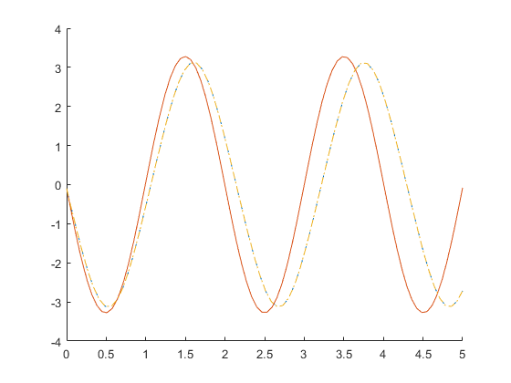
 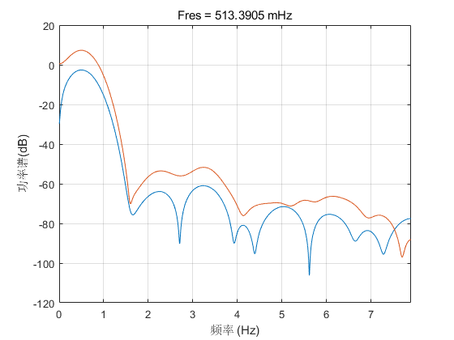 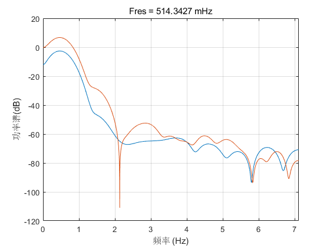 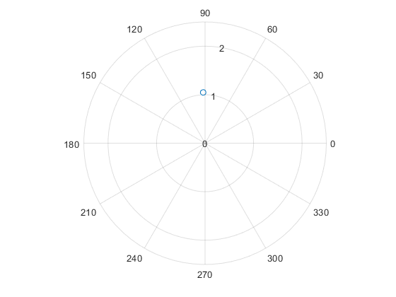
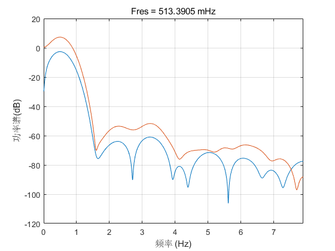 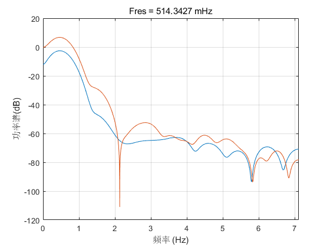 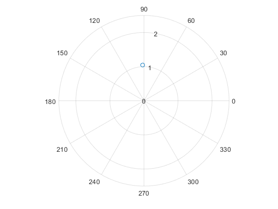 Deprecated
simulation timestep
t = 0; dt = 1e-1; tmax = 150;
m = 10; g = 9.8; l = 1;
theta0 = pi/3; % initial angular position in radians d_theta0 = 0; % initial angular velocity in rad per sec
nTHD = 4;
clc; close all;
tic;
Fs = 1/dt; iter = 1; iter_max = tmax/dt + 1;
f = figure(1); f.Units = 'normalized'; f.Position = [0 0 .8 .3]; f.ToolBar = 'none'; f.MenuBar = 'none'; f.Name = '时域'; f.NumberTitle = 'off';
ax = axes(f, 'Units','normalized', 'Position',[.05,.15,.92,.8], 'NextPlot','add'); xlabel(ax, '\bf Time'); ylabel(ax, '\bf\theta');
cmap = colormap('lines'); % cmap = colormap('prism');
%h1 = animatedline('Color',cmap(1,:), 'LineWidth',2); theta1 = theta0; d_theta1 = d_theta0; %h2 = animatedline('Color',cmap(2,:), 'LineWidth',1); theta2 = theta0; d_theta2 = d_theta0; %h3 = animatedline('Color',cmap(3,:), 'LineWidth',1.4); theta3 = theta0; d_theta3 = d_theta0;
T = t:dt:tmax; Y1 = zeros(iter_max, 1); Y2 = zeros(iter_max, 1); Y3 = zeros(iter_max, 1);
rng(0); % delta_g = .9*g.*randn(iter_max, 1); delta_g = .2*g.*sin(2*pi*0.5*T);
while iter <= iter_max
% addpoints(h1, t,theta1); % addpoints(h2, t,theta2); % addpoints(h3, t,theta3);
% plot(t,theta1, 'Color',cmap(1,:)); % plot(t,theta2, 'Color',cmap(2,:)); % plot(t,theta3, 'Color',cmap(3,:));
% T(iter) = t; 这种预分配的写法适用于固定时间步进，便于计算FFT、作图，也避免循环过程中更改数据维度。但存在效率问题 Y1(iter) = theta1; Y2(iter) = theta2; Y3(iter) = theta3;
theta1 = theta1 + dt * d_theta1; theta2 = theta2 + dt * d_theta2; theta3 = theta3 + dt * d_theta3;
if theta3 >= pi theta3 = theta3 - 2*pi; elseif theta3 < -pi theta3 = theta3 + 2*pi; end
d_theta1 = d_theta1 - dt * (g/l)*theta1; d_theta2 = d_theta2 - dt * (g/l)*sin(theta2); d_theta3 = d_theta3 - dt * ((g + delta_g(iter))/l)*sin(theta2);
t = t + dt; iter = iter + 1;
end
plot(ax, T,Y1); plot(ax, T,Y2); %plot(ax, T,Y3); legend(ax, {'小角近似','物理摆','硬解加扰动'}, 'FontSize',16);
% fft_Y1 = fft_Y1(1:iter_max/2+1); 如iter_max不是偶数将引发警告，但不是错误 % 冒号表达式以1步进，必定取整。可以抑制警告输出，也可手动下取整数
fft_Y1 = abs(fft(Y1)/iter_max); fft_Y1 = fft_Y1(1:floor(iter_max/2+1)); fft_Y1(2:end-1) = 2*fft_Y1(2:end-1); fft_Y2 = abs(fft(Y2)/iter_max); fft_Y2 = fft_Y2(1:floor(iter_max/2+1)); fft_Y2(2:end-1) = 2*fft_Y2(2:end-1); fft_Y3 = abs(fft(Y3)/iter_max); fft_Y3 = fft_Y3(1:floor(iter_max/2+1)); fft_Y3(2:end-1) = 2*fft_Y3(2:end-1);
fft_ng = abs(fft(delta_g)/iter_max); fft_ng = fft_ng(1:floor(iter_max/2+1)); fft_ng(2:end-1) = 2*fft_ng(2:end-1); fft_ng = fft_ng/g;% 扰动量可以用比例衡量，需要归一化
fft_f = figure(2); fft_f.Units = 'normalized'; fft_f.ToolBar = 'figure'; fft_f.MenuBar = 'none'; fft_f.Name = '频域'; fft_f.NumberTitle = 'off';
fft_ax = axes(fft_f, 'Units','normalized', 'Position',[.09,.13,.9,.85],... 'NextPlot','add', 'YLim',[1e-4, 2+my_max(fft_Y1,fft_Y2,fft_Y3,fft_ng)]); fft_ax.XScale = 'log'; fft_ax.YScale = 'log'; fft_ax.XGrid = 'on'; fft_ax.YGrid = 'on'; % hold on; 等价于 gca.NextPlot = 'add'; 避免后面的plot导致前面的图冲掉 % 设置轴的X/YScale为log可以手动实现loglog图 % 也可以使用mag2db, pow2db
xlabel(fft_ax, '\bf 频率 (Hz)'); ylabel(fft_ax, '\bf 振幅 (m)');
plot(fft_ax, fft_Y1); plot(fft_ax, fft_Y2); %plot(fft_ax, fft_Y3); plot(fft_ax, fft_ng);
[M1, I1] = max(fft_Y1); text(fft_ax, I1+15,M1, sprintf('%.3f@%.1f',M1,I1)); plot(I1,M1,'o'); [M2, I2] = max(fft_Y2); text(fft_ax, I2-49,M2, sprintf('%.3f@%.1f',M2,I2)); plot(I2,M2,'d'); [M3, I3] = max(fft_ng); text(fft_ax, I3,M3, sprintf('%.2f@%.1f',M3,I3)); plot(I3,M3,'x');
text(fft_ax, 1,2, sprintf('',1.23)); % sprintf可以向title, legend, text, xylabel等插入C风格的格式化字符串 % 单纯使用'string'插入则可以使用tex/latex风格的语法。可指定解释器 % 大概不可兼得？
legend(fft_ax, {'小角近似','物理摆','硬解加扰动','扰动'}, 'FontSize',16, 'Location','best');
f = 1/(2*pi)*sqrt(g/l); % xlim([0, f*(nTHD+1)]);
toc; function max_val = my_max(varargin) temp_max = zeros(nargin, 1); for i = 1:nargin temp_max(i) = max(varargin{i}); end max_val = max(temp_max); end